<!DOCTYPE html>
<html lang="de">
<head>
<meta charset="utf-8">
<meta name="viewport" content="width=device-width, initial-scale=1">
<title>Sessionplanung · Bremer BildungsBarcamp</title>
<link rel="icon" href="assets/favicon.png">
<link rel="stylesheet" href="https://fonts.bunny.net/css?family=noto-sans:400,600,700,800">
<link rel="stylesheet" href="barcamp.css?v=2026-11-23d">
<script src="https://cdnjs.cloudflare.com/ajax/libs/qrcode-generator/1.4.4/qrcode.min.js"></script>
<script src="taskcards.js?v=2026-11-23d"></script>
<style>
  /* Links der Vorstellungs-Timer, rechts das Live-Raster Räume × Zeitslots */
  .main { flex:1; min-height:0; display:grid; grid-template-columns:minmax(0,1fr) minmax(0,1.35fr); gap:2vw; }
  .main.solo { grid-template-columns:1fr; }
  .main.solo .gridpanel { display:none; }

  .timer { display:flex; flex-direction:column; align-items:center; justify-content:center; text-align:center; position:relative; transition:background .3s; }
  .timer .count { font-weight:800; font-size:clamp(18px,2vw,40px); margin-top:1vh; }
  .ring { position:relative; width:min(34vw, 44vh); aspect-ratio:1; margin:1.5vh 0; flex:none; cursor:pointer; }
  .main.solo .ring { width:min(60vw, 48vh); }
  .ring svg { width:100%; height:100%; transform:rotate(-90deg); }
  .ring .bg { fill:none; stroke:var(--grey); stroke-width:9; }
  .ring .fg { fill:none; stroke:var(--black); stroke-width:9; stroke-linecap:round; transition:stroke .3s; }
  .ring .num { position:absolute; inset:0; display:flex; flex-direction:column; align-items:center; justify-content:center; }
  .ring .num b { font-size:clamp(50px,min(11vw,17vh),220px); font-weight:800; line-height:1; font-variant-numeric:tabular-nums; }
  .main.solo .ring .num b { font-size:clamp(60px,min(17vw,19vh),320px); }
  .ring .num span { color:var(--muted); font-weight:700; font-size:clamp(13px,1.3vw,24px); margin-top:.6vh; }
  .timer.warn .fg { stroke:var(--red2); }
  .timer.crit .fg { stroke:var(--red); }
  .timer.crit .ring .num b { color:var(--red); animation:beat 1s ease-in-out infinite; }
  @keyframes beat { 0%,100% { transform:scale(1); } 15% { transform:scale(1.12); } }
  .timer.done { background:linear-gradient(160deg, var(--red), var(--red2)); color:#fff; animation:flash 1s ease-in-out 3; }
  .timer.done .ring .num b, .timer.done .ring .num span, .timer.done .count, .timer.done .hint { color:#fff; }
  .timer.done .bg { stroke:rgba(255,255,255,.25); }
  @keyframes flash { 50% { background:var(--red2); } }
  .timer .hint { color:var(--muted); font-size:clamp(13px,1.2vw,22px); }
  .timer .hint kbd { background:var(--grey); border-radius:6px; padding:.05em .45em; font:inherit; font-weight:700; color:var(--ink); }
  /* QR-Tafel: Sessionplan aufs Handy (ersetzt nach der Planung den Timer) */
  .main.qr .timer { display:none; }
  .qrpanel { display:none; flex-direction:column; align-items:center; justify-content:center; text-align:center; }
  .main.qr .qrpanel { display:flex; }
  .qrpanel h1 { color:var(--red); font-size:clamp(24px,min(3vw,5vh),60px); margin:1.2vh 0 .4vh; line-height:1.1; }
  .qrpanel h2 { font-size:clamp(15px,min(1.5vw,2.6vh),30px); margin:0 0 2vh; font-weight:700; }
  .qrpanel .qr { width:min(30vw, 46vh); flex:none; }
  .main.solo .qrpanel .qr { width:min(50vw, 52vh); }
  .qrpanel .qr svg { display:block; width:100%; height:auto; }
  .qrpanel .back { margin-top:2vh; }
  .ctrls { display:flex; gap:.6vw; flex-wrap:wrap; justify-content:center; margin-top:1.6vh; }
  .ctrls button { border:0; border-radius:999px; font:inherit; font-weight:700; font-size:clamp(13px,1.15vw,20px); padding:.55em 1.1em; cursor:pointer; background:var(--grey); color:var(--ink); }
  .ctrls button.go { background:var(--red); color:#fff; font-size:clamp(15px,1.5vw,26px); padding:.6em 1.5em; }
  .timer.done .ctrls button.go { background:#fff; color:var(--red); }

  /* Ton-Menü */
  .menu { position:fixed; inset:0; z-index:25; background:rgba(29,29,27,.35); display:flex; align-items:center; justify-content:center; }
  .menubox { background:#fff; border-radius:20px; padding:26px 28px; width:min(460px, 92vw); box-shadow:0 20px 60px rgba(0,0,0,.3); }
  .menubox h2 { margin:0 0 6px; color:var(--red); }
  .menubox label { display:block; font-weight:700; font-size:14px; margin:14px 0 6px; color:var(--muted); }
  .mrow { display:flex; gap:8px; }
  .mrow select { flex:1; padding:10px; font:inherit; font-size:15px; border-radius:10px; border:1px solid #cfcfcf; }
  .menubox button { border:0; border-radius:999px; font:inherit; font-weight:700; padding:9px 14px; cursor:pointer; background:var(--grey); }
  .menubox input[type=range] { width:100%; accent-color:var(--red); }
  .menubox .close { margin-top:18px; width:100%; background:var(--red); color:#fff; font-size:16px; }

  /* Live-Raster */
  .gridpanel { display:flex; flex-direction:column; }
  .gridhead { display:flex; align-items:baseline; justify-content:space-between; gap:1vw; }
  .gridhead .stat { font-weight:800; font-size:clamp(15px,1.6vw,30px); }
  .gridhead .stat em { font-style:normal; color:var(--red); }
  .fill { height:10px; background:var(--grey); border-radius:99px; overflow:hidden; margin:1.2vh 0 1.6vh; }
  .fill i { display:block; height:100%; background:var(--red); border-radius:99px; transition:width 1s; }
  .grid { flex:1; min-height:0; display:grid; gap:.35em; overflow:hidden; }
  .grid .h { font-weight:800; font-size:.8em; align-self:end; padding:0 .3em .2em; }
  .grid .r { font-weight:800; color:var(--red); text-transform:uppercase; letter-spacing:.04em; font-size:.62em; align-self:center; padding-right:.4em; overflow:hidden; text-overflow:ellipsis; white-space:nowrap; }
  .cell { border-radius:10px; padding:.35em .5em; line-height:1.18; min-height:0; overflow:hidden; background:var(--grey2); border-left:5px solid var(--red); }
  .cell b { display:block; font-weight:700; }
  .cell small { color:var(--muted); font-size:.75em; }
  .cell.free { background:none; border:2px dashed #c8c8c8; color:#8a8a8a; display:flex; align-items:center; justify-content:center; font-size:.8em; }
  .cell.new { animation:pop 1.6s ease; }
  @keyframes pop { 0% { transform:scale(.6); background:var(--red2); color:#fff; } 40% { transform:scale(1.06); background:var(--red2); color:#fff; } 100% { transform:none; } }
  .gridfoot { color:var(--muted); font-size:clamp(11px,1vw,17px); margin-top:1vh; }
</style>
</head>
<body>
<div class="skyline" aria-hidden="true"></div>
<div id="app"></div>

<script>
const C = BC.conf();
const $ = BC.$;

// ================= Timer =================
// Zustand: bereit → läuft → (Pause) → Zeit um; Leertaste startet jederzeit die nächste Vorstellung
const T = {
  dur: Math.min(300, Math.max(10, +C.cfg.pitchSec || 30)),   // Sekunden pro Vorstellung
  count: +sessionStorage.getItem('pitchCount') || 0,         // Vorstellungen in dieser Runde
  end: 0, left: 0, state: 'ready', lastBeep: null,
  sound: C.cfg.pitchSound !== false,
  endSound: C.cfg.pitchEnd || 'horn',          // Endsignal
  tick: C.cfg.pitchTick || 'soft',             // Ticken in den letzten 3 Sekunden
  vol: C.cfg.pitchVol != null ? +C.cfg.pitchVol : 0.8,
};

// ---------- Ton (Web Audio, startet erst nach dem ersten Klick/Tastendruck) ----------
let AC = null, MASTER = null;
function audio() {
  if (!AC) {
    const A = window.AudioContext || window.webkitAudioContext;
    if (A) { AC = new A(); MASTER = AC.createGain(); MASTER.connect(AC.destination); }
  }
  if (AC && AC.state === 'suspended') AC.resume();
  if (MASTER) MASTER.gain.value = T.vol;
  return AC;
}
// Einzelton mit Hüllkurve; optional Filter, Vibrato und Tonhöhen-Gleiten
function tone(freq, start, dur, vol, type, o = {}) {
  const a = audio(); if (!a || !T.sound) return;
  const t = a.currentTime + start;
  const osc = a.createOscillator(), g = a.createGain();
  osc.type = type || 'sine'; osc.frequency.setValueAtTime(freq, t);
  if (o.slideTo) osc.frequency.exponentialRampToValueAtTime(o.slideTo, t + dur);
  if (o.vib) {   // Vibrato bzw. Triller (z. B. Pfeife)
    const lfo = a.createOscillator(), lg = a.createGain();
    lfo.frequency.value = o.vib[0]; lg.gain.value = o.vib[1];
    lfo.connect(lg).connect(osc.frequency); lfo.start(t); lfo.stop(t + dur + 0.05);
  }
  const att = o.attack || 0.01, hold = o.hold || 0;
  g.gain.setValueAtTime(0.0001, t);
  g.gain.exponentialRampToValueAtTime(vol, t + att);
  if (hold) g.gain.setValueAtTime(vol, t + att + hold);
  g.gain.exponentialRampToValueAtTime(0.0001, t + att + hold + dur);
  let node = osc;
  if (o.lowpass) { const f = a.createBiquadFilter(); f.type = 'lowpass'; f.frequency.value = o.lowpass; node.connect(f); node = f; }
  node.connect(g).connect(MASTER);
  osc.start(t); osc.stop(t + att + hold + dur + 0.05);
}
// Glocke mit typischen Glocken-Obertönen
function bell(f, start, vol, len) {
  [[0.5, 0.35, 1.0], [1, 0.55, 0.85], [1.19, 0.28, 0.6], [1.5, 0.16, 0.5], [2, 0.22, 0.42], [2.51, 0.09, 0.3], [3.01, 0.06, 0.22]]
    .forEach(([ratio, gain, decay]) => tone(f * ratio, start, len * decay, vol * gain));
}

// Wählbare Endsignale
const END_SOUNDS = {
  horn:    { label:'Horn (Stadion)', play() {          // kräftiges Signalhorn: zwei raue Töne, kurz gehalten
    [[370, 0.32], [466, 0.26], [554, 0.12]].forEach(([f, v]) => tone(f, 0, 0.35, v, 'sawtooth', { attack:0.03, hold:0.9, lowpass:2200, vib:[5, 4] }));
  } },
  ship:    { label:'Schiffshorn (tief)', play() {
    [[110, 0.45], [165, 0.3], [220, 0.12]].forEach(([f, v]) => tone(f, 0, 0.6, v, 'sawtooth', { attack:0.12, hold:1.3, lowpass:700 }));
  } },
  whistle: { label:'Pfiff (Schiri)', play() {         // zwei Pfiffe mit Triller
    tone(2900, 0, 0.08, 0.7, 'sine', { attack:0.01, hold:0.18, vib:[32, 140] });
    tone(2900, 0.38, 0.12, 0.7, 'sine', { attack:0.01, hold:0.55, vib:[32, 140] });
  } },
  buzzer:  { label:'Buzzer (Quiz)', play() {
    tone(140, 0, 0.12, 0.35, 'square', { attack:0.005, hold:0.6, lowpass:1500 });
    tone(147, 0, 0.12, 0.25, 'square', { attack:0.005, hold:0.6, lowpass:1500 });
  } },
  ding:    { label:'Ding (sanft)', play() { bell(784, 0, 0.55, 2.4); } },
  cuckoo:  { label:'Kuckuck', play() {
    tone(659, 0, 0.25, 0.7, 'sine', { attack:0.02, hold:0.12 }); tone(523, 0.42, 0.35, 0.7, 'sine', { attack:0.02, hold:0.18 });
  } },
  gong:    { label:'Schulgong (3 Töne)', play() { bell(392, 0, 0.5, 2.6); bell(330, 0.75, 0.5, 2.6); bell(262, 1.5, 0.55, 4.0); } },
  none:    { label:'Kein Ton (nur Bild)', play() {} },
};
const TICKS = { soft:'leises Tock', clear:'deutliches Ticken', off:'kein Ticken' };

function endSound() { (END_SOUNDS[T.endSound] || END_SOUNDS.horn).play(); }
function tick(last) {
  if (T.tick === 'off') return;
  if (T.tick === 'clear') tone(last ? 1175 : 880, 0, 0.06, 0.3, 'triangle');
  else { tone(last ? 880 : 740, 0, 0.07, 0.16); tone(last ? 1760 : 1480, 0, 0.03, 0.05); }
}

// ---------- Steuerung ----------
function startNext() {
  audio();
  T.count++; sessionStorage.setItem('pitchCount', T.count);
  T.end = Date.now() + T.dur * 1000; T.state = 'run'; T.lastBeep = null;
  draw();
}
function togglePause() {
  if (T.state === 'run') { T.left = Math.max(0, T.end - Date.now()); T.state = 'pause'; }
  else if (T.state === 'pause') { T.end = Date.now() + T.left; T.state = 'run'; }
  draw();
}
function stopTimer() { T.state = 'ready'; draw(); }
function resetCount() { T.count = 0; sessionStorage.setItem('pitchCount', 0); T.state = 'ready'; draw(); }
function setDur(d) { T.dur = Math.min(300, Math.max(10, d)); BC.writeCfg({ pitchSec: T.dur }); if (T.state !== 'run') draw(); }
function toggleSound() { T.sound = !T.sound; BC.writeCfg({ pitchSound: T.sound }); draw(); }

function remaining() {
  if (T.state === 'run') return Math.max(0, (T.end - Date.now()) / 1000);
  if (T.state === 'pause') return T.left / 1000;
  if (T.state === 'done') return 0;
  return T.dur;
}

// läuft ~10× pro Sekunde: Ring, Ziffern, Töne
function loop() {
  if (T.state === 'run') {
    const r = remaining(), whole = Math.ceil(r);
    if (r <= 0) { T.state = 'done'; endSound(); }
    else if (whole <= 3 && whole !== T.lastBeep) { T.lastBeep = whole; tick(whole === 1); }
  }
  paintTimer();
}

const R = 45, CIRC = 2 * Math.PI * R;
function paintTimer() {
  const box = document.querySelector('.timer'); if (!box) return;
  const r = remaining(), whole = Math.ceil(r);
  box.classList.toggle('warn', T.state === 'run' && r <= 10 && r > 5);
  box.classList.toggle('crit', T.state === 'run' && r <= 5);
  box.classList.toggle('done', T.state === 'done');
  box.querySelector('.fg').style.strokeDashoffset = CIRC * (1 - r / T.dur);
  box.querySelector('.num b').textContent = T.state === 'done' ? '0' : whole;
  box.querySelector('.num span').textContent = { ready:'Sekunden', run:'Sekunden', pause:'Pause', done:'Zeit!' }[T.state];
  box.querySelector('.count').textContent = T.count ? `Vorstellung #${T.count}` : 'Bereit für die erste Vorstellung';
  box.querySelector('.go').textContent = T.state === 'ready' && !T.count ? '▶ Start' : '▶ Nächste Vorstellung';
  const clock = document.querySelector('.top .clock');
  if (clock) clock.textContent = BC.fmt(Math.floor(BC.nowSec(C) / 60) % 1440);
}

function timerHTML() {
  return `<div class="panel timer"><span class="pill">Session-Vorstellung</span>
    <div class="count"></div>
    <div class="ring" data-act="go" title="Klick oder Leertaste: nächste Vorstellung">
      <svg viewBox="0 0 100 100"><circle class="bg" cx="50" cy="50" r="${R}"/><circle class="fg" cx="50" cy="50" r="${R}" stroke-dasharray="${CIRC}" stroke-dashoffset="0"/></svg>
      <div class="num"><b>${T.dur}</b><span>Sekunden</span></div>
    </div>
    <div class="hint"><kbd>Leertaste</kbd> nächste Vorstellung · <kbd>P</kbd> Pause · <kbd>G</kbd> Raster · <kbd>T</kbd> Ton${C.planQr ? ' · <kbd>Q</kbd> QR-Code' : ''}</div>
    <div class="ctrls">
      <button class="go" data-act="go">▶ Start</button>
      <button data-act="pause">Pause</button>
      <button data-act="minus">−5 s</button><button data-act="plus">+5 s</button>
      <button data-act="sound" title="Ton an/aus (M)">${T.sound ? 'Ton an' : 'Ton aus'}</button>
      <button data-act="menu" title="Tonauswahl (T)">Ton wählen</button>
      <button data-act="reset" title="Zähler auf 0">↺ Zähler</button>
      ${C.planQr ? '<button data-act="qr" title="QR-Code zum Sessionplan (Q)">QR-Code</button>' : ''}
    </div></div>`;
}

// QR-Code zur mobilen Ansicht, z. B. nach der Planung statt des Timers
function qrHTML() {
  if (!C.planQr) return '';
  return `<div class="panel qrpanel"><span class="pill">Sessionplan aufs Handy</span>
    <h1>Jetzt scannen und Sessions merken</h1>
    <h2>Alle Räume, dein eigener Plan und die Dokumentation</h2>
    <div class="qr">${BC.qrSvg(C.planQr)}</div>
    <div class="ctrls back"><button data-act="qr" title="Zurück zum Timer (Q)">Zurück zum Timer</button></div></div>`;
}

// ================= Live-Raster Räume × Zeitslots =================
let P = null, known = null, lastOk = null, err = '';

function gridHTML() {
  if (!P) return `<div class="panel gridpanel"><span class="pill">Sessionplan</span><p class="gridfoot">${err ? 'Achtung: ' + BC.esc(err) : 'Lade Sessionplan …'}</p></div>`;
  const slots = P.slots, rooms = P.rooms;
  const total = slots.length * rooms.length;
  const filled = P.sessions.length;
  const head = `<span></span>` + slots.map(s => `<div class="h">${BC.fmt(s.start)}</div>`).join('');
  const rows = rooms.map(room => `<div class="r" title="${BC.esc(room)}">${BC.esc(room)}</div>` + slots.map((s, si) => {
    const x = P.sessions.find(y => y.room === room && y.slot === si);
    if (!x) return '<div class="cell free">frei</div>';
    const isNew = known && !known.has(x.id);
    return `<div class="cell${isNew ? ' new' : ''}"><b>${BC.esc(x.title)}</b>${x.host ? `<small>${BC.esc(x.host)}</small>` : ''}</div>`;
  }).join('')).join('');
  return `<div class="panel gridpanel">
    <div class="gridhead"><span class="pill">Sessionplan · live</span><span class="stat"><em>${filled}</em> von ${total} Plätzen belegt</span></div>
    <div class="fill"><i style="width:${total ? filled / total * 100 : 0}%"></i></div>
    <div class="grid" style="grid-template-columns:auto repeat(${slots.length}, minmax(0,1fr)); grid-template-rows:auto repeat(${rooms.length}, minmax(0,1fr));">${head}${rows}</div>
    <div class="gridfoot">${P.proposals ? P.proposals + ' Sessionvorschläge auf dem Board · ' : ''}${lastOk ? 'Stand ' + lastOk.toLocaleTimeString('de-DE', { hour:'2-digit', minute:'2-digit', second:'2-digit' }) : ''}${err ? ' · Achtung: ' + BC.esc(err) : ''}</div></div>`;
}

function fitGrid() {
  const g = document.querySelector('.grid'); if (!g) return;
  BC.maxFit(sz => g.style.fontSize = sz + 'px',
    () => [...g.querySelectorAll('.cell')].every(c => c.scrollHeight <= c.clientHeight + 1) && g.scrollHeight <= g.clientHeight + 1,
    9, window.innerWidth / 50);
}

let solo = false, showQr = false;
function draw() {
  const nowM = Math.floor(BC.nowSec(C) / 60);
  $('app').innerHTML = `<div class="stage${C.zeit ? ' demo' : ''}">
    <div class="top"><span class="sub">· Sessionplanung</span>${C.tag ? `<span class="tag">${BC.esc(C.tag)}</span>` : ''}
      <span class="clock">${BC.fmt(nowM % 1440)}</span></div>
    <div class="main${solo ? ' solo' : ''}${showQr && C.planQr ? ' qr' : ''}">${timerHTML()}${qrHTML()}${gridHTML()}</div></div>${menuHTML()}`;
  paintTimer(); fitGrid();
}
// nur das Raster neu zeichnen (Timer läuft ungestört weiter)
function drawGrid() {
  const old = document.querySelector('.gridpanel'); if (!old) return draw();
  const tmp = document.createElement('div'); tmp.innerHTML = gridHTML();
  old.replaceWith(tmp.firstElementChild); fitGrid();
  const clock = document.querySelector('.top .clock'); if (clock) clock.textContent = BC.fmt(Math.floor(BC.nowSec(C) / 60) % 1440);
}

async function refresh() {
  try {
    const next = await BC.loadPlan(C);
    if (P) known = new Set(P.sessions.map(x => x.id));   // neue Einträge hervorheben
    P = next; lastOk = new Date(); err = '';
  } catch (e) { err = e.message; }
  drawGrid();
}

// ================= Ton-Menü =================
let menuOpen = false;
function toggleMenu() { menuOpen = !menuOpen; draw(); }
function menuHTML() {
  if (!menuOpen) return '';
  const opts = (o, cur) => Object.entries(o).map(([k, v]) => `<option value="${k}"${k === cur ? ' selected' : ''}>${typeof v === 'string' ? v : v.label}</option>`).join('');
  return `<div class="menu" role="dialog" aria-label="Tonauswahl"><div class="menubox">
    <h2>Ton für die Vorstellungen</h2>
    <label>Signal am Ende</label>
    <div class="mrow"><select id="mEnd">${opts(END_SOUNDS, T.endSound)}</select><button data-act="tryEnd">▶ Probe</button></div>
    <label>In den letzten 3 Sekunden</label>
    <div class="mrow"><select id="mTick">${opts(TICKS, T.tick)}</select><button data-act="tryTick">▶ Probe</button></div>
    <label>Lautstärke <span id="mVolV">${Math.round(T.vol * 100)} %</span></label>
    <input id="mVol" type="range" min="0" max="1" step="0.05" value="${T.vol}">
    <button class="close" data-act="close">Fertig</button></div></div>`;
}
// Änderungen im Menü sofort übernehmen und merken
document.addEventListener('change', e => {
  if (e.target.id === 'mEnd') { T.endSound = e.target.value; BC.writeCfg({ pitchEnd: T.endSound }); audio(); endSound(); }
  if (e.target.id === 'mTick') { T.tick = e.target.value; BC.writeCfg({ pitchTick: T.tick }); }
});
document.addEventListener('input', e => {
  if (e.target.id === 'mVol') { T.vol = +e.target.value; BC.writeCfg({ pitchVol: T.vol }); if (MASTER) MASTER.gain.value = T.vol; $('mVolV').textContent = Math.round(T.vol * 100) + ' %'; }
});

// ================= Bedienung =================
document.addEventListener('click', e => {
  const a = e.target.closest('[data-act]'); if (!a) return;
  ({ go: startNext, pause: togglePause, minus: () => setDur(T.dur - 5), plus: () => setDur(T.dur + 5),
     sound: toggleSound, reset: resetCount, qr: toggleQr, menu: toggleMenu, close: toggleMenu,
     tryEnd: () => { audio(); endSound(); }, tryTick: () => { audio(); [3, 2, 1].forEach((n, i) => setTimeout(() => tick(n === 1), i * 1000)); },
  })[a.dataset.act]();
});
document.addEventListener('keydown', e => {
  if (e.target.closest && e.target.closest('input, select')) return;
  const k = e.key.toLowerCase();
  if (menuOpen && (k === 'escape' || k === 't')) { toggleMenu(); return; }
  if (menuOpen) return;
  if (k === ' ' || k === 'enter') { e.preventDefault(); if (showQr) toggleQr(); else startNext(); }
  else if (k === 'q') toggleQr();
  else if (k === 'p') togglePause();
  else if (k === 'escape') stopTimer();
  else if (k === '+' || k === 'arrowup') setDur(T.dur + 5);
  else if (k === '-' || k === 'arrowdown') setDur(T.dur - 5);
  else if (k === 'm') toggleSound();
  else if (k === 't') toggleMenu();
  else if (k === '0') resetCount();
  else if (k === 'g') { solo = !solo; draw(); }
});
window.addEventListener('resize', () => fitGrid());
// QR-Tafel ein/aus, ohne den Timer zu verlieren
function toggleQr() {
  if (!C.planQr) { BC.flash('Kein Handy-Link: In der Diashow beim Sessionplan eintragen'); return; }
  showQr = !showQr; document.querySelector('.main').classList.toggle('qr', showQr); fitGrid();
}

BC.installChrome('sessionplanung.html');
draw();
setInterval(loop, 100);
if (C.plan) { refresh(); setInterval(refresh, 10000); }   // Raster alle 10 Sekunden aktualisieren
else { solo = true; draw(); }                              // ohne Board: nur der Timer
</script>
</body>
</html>
